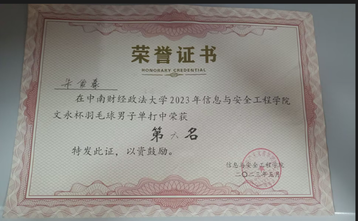
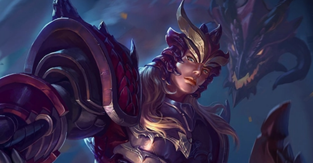

吹笛是我生活中不可或缺的一部分。每当我开始享受笛声，仿佛就进入了一个全新的世界。
在如今如此快节奏的时代，我通常会莫名感到焦虑、烦躁，一直在忙，但也不知道忙什么。
但是放空大脑，在一遍遍地练习已经吹过百遍的练习曲的过程中，我将会无比放松，进入一片奇妙的天地，
我有一颗探索未知的心，世界是无比的庞大，也藏匿着许多未知，纸上得来终觉浅，只有亲身经历才能感受到世界的美妙。
在旅游的过程中，大到山川美景、亭台楼阁，小到走街串巷、品尝特色美食，没一个都牵动着我那颗躁动的心。
羽毛球是我最喜欢的运动之一。在球场上，我可以尽情挥洒汗水，感受运动的快乐。
每一次击球都需要全神贯注，这不仅锻炼了我的反应能力和身体协调性，还让我学会了坚持不懈和团队合作。
我还积极参加学校举办的各种羽毛球比赛，也拿下了“文永杯”的第六名。
我热衷于探索虚拟世界二次元的魅力。在这个充满奇幻与创意的天地里，我能够邂逅各种独特的角色， 体验他们丰富多彩的故事。二次元的世界无拘无束，充满想象力，让我在其中自由翱翔。无论是动画、漫画还是游戏， 我都能找到那份独特的快乐和感动。在这个世界中，我能够与志同道合的朋友共同分享喜悦，共同追寻那份纯真的梦想。
《英魂之刃》是一款由福建网龙计算机网络信息技术有限公司采用自研S3引擎开发的 MOBA 游戏
该作保留了高低地、迷雾、传送、装备主动技能等MOBA设定，让玩家在排位、乱斗、RPG副本、自走棋等多种模式中进行游戏。
